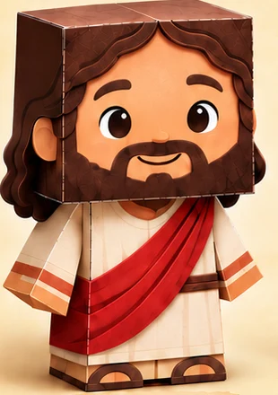
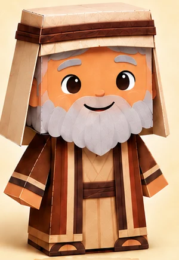
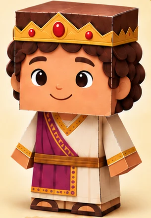
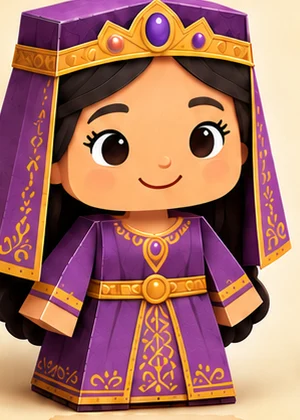
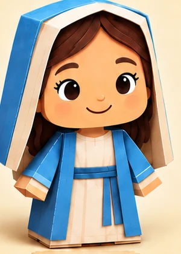
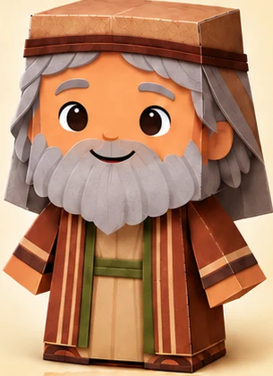

01 · ESENCIAL
Los personajes para armar
$200 MXN · pago único
Ir al pago · $200 MXN- 50 personajes bíblicos para imprimir, recortar, doblar y pegar.
- Nacimiento de Jesús en 3D.
- La Mañana de la Resurrección.
- La Armadura de Dios.
Con 50 personajes bíblicos para imprimir y armar, cada niño puede llevarse a casa el personaje que hizo en clase.
Mira cómo puedes usar los moldes en tu próxima clase ↓
Desde $200 MXN · Pago único · Material digital
Incluye 3 materiales adicionales · Nacimiento de Jesús en 3D, La Mañana de la Resurrección y La Armadura de Dios.
ELIGE TU COMPLEMENTO
Ambos planes incluyen la colección y los tres materiales adicionales.
01 · ESENCIAL
$200 MXN · pago único
Ir al pago · $200 MXN02 · PREMIUM AULA LISTA
$400 MXN · pago único
Ir al pago Premium · $400 MXNLa página de pago de este plan todavía no está disponible.
Recibirás tus archivos digitales después de que se confirme el pago.
VISTA DE LA COLECCIÓN
Elige uno para acompañar el pasaje que enseñarás.






Ilustraciones de referencia. Recibirás moldes digitales para imprimir y armar.
CÓMO FUNCIONA
Busca el molde que acompaña el pasaje que vas a enseñar.
Prepara las piezas y ayuda a los niños a recortar, doblar y pegar.
Invítalos a contar con sus propias palabras lo que aprendieron.
ANTES DE ELEGIR
Elige un plan y continúa a su página de pago. Recibirás el material digital cuando se confirme el pago.
Necesitas impresora, papel, tijeras y pegamento. Puedes llevar las piezas recortadas y ayudar a los más pequeños con el armado.
Copia una instrucción en tu propia cuenta de ChatGPT y añade la edad del grupo, el pasaje y el tiempo de clase. Revisa el borrador antes de enseñarlo. El paquete incluye las instrucciones y las guías digitales.
Tu compra anterior sigue confirmada. Esta colección se adquiere por separado.
GRACIAS POR TU COMPRA